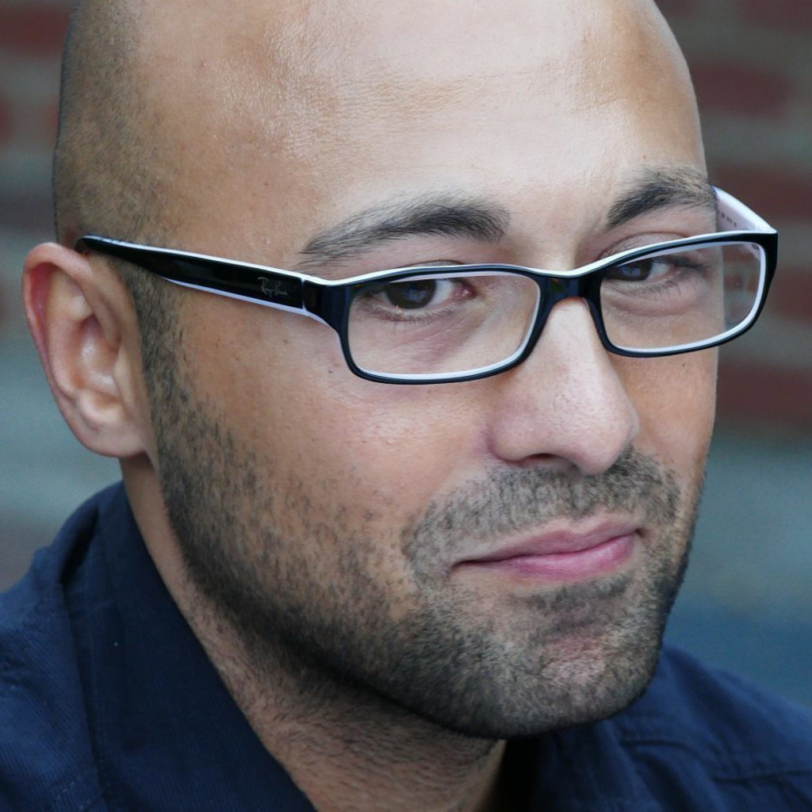

Addi's Resume

Summary
15 years of experience in automotive industry with a focus
on high voltage lithium ion battery system technology.
Currently working at Volkswagen for high voltage battery system diagnostics.
Education
- Bachelor of Engineering in Automotive Engieering, Univerity of applied sciences, Berlin, Germany
- Master of Engineering in Automotive Engieering, Univerity of applied
sciences, Berlin, Germany
Work Experience
All experience related to lithium ion battery technology for automotive
applications.
- 2010 - 2013: Panasonic - System Engineer
- 2013 - 2020: Samsung SDI - System Engineer
- 2020 - 2023: Volkswagen - Quality Assurance Engineer
- 2023 - Present: Volkswagen - Diagnostic Service Engineer
About Me Contact Me